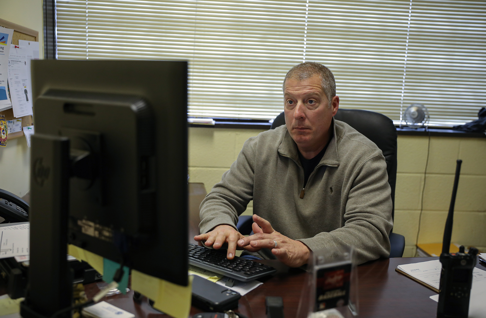

Phil Bowers, founder and executive director of Sustainable Alamance, runs the organization out of Beverly Hills United Church of Christ in Burlington, where he is also a pastor. Photo by Anton L. Delgado.
When Dwayne Daughtry meets someone for the first time, it rarely starts with an introduction.
"Every day I feel like I'm reliving my crime all over again because when people talk to me, the first thing they want to hear about is what I did. Not what I do, or who I am," Daughtry said.
In June 2011, Daughtry was charged with sexual battery and said he became known as 021152S11, his Sex Registration Number. Daughtry said his placement on North Carolina's Sex Offender Registry has defined him every day since.
Daughtry and more than 25,500 other people are listed on the state's registry.
"Before all this happened, I was pro-registry because I just didn't know any facts about it," Daughtry said. "Then I became a part of this group and learned quickly there were no resources, no advocacy, no other side of the coin."
Eight-and-a-half years after registration, Daughtry now works as the executive director of North Carolina's affiliate of the National Association for Rational Sexual Offense Laws.
"We're the most hated group in North Carolina," Daughtry said. "People hate the crime and so they hate the people on the other side of it as well."
Alamance County is home to 394 registrants. It has the ninth highest number of sex offenders in North Carolina, the statewide county average being approximately 187.
Every day Lt. Bray McAteer has one of the county's registrants come into his office, shake his hand and ask for help. As the deputy in charge of the Sheriff’s Office’s Special Victims Unit, McAteer and his eight-person team monitor all registered offenders in the community.
Across the country, law enforcement is federally required to make the personal information of sex offenders — names, races, sex, heights, weights, eye and hair colors, addresses, birthdays, scars, marks and tattoos — publicly available. The statute that orders this, nicknamed Megan's Law, was passed in an effort to limit the contact offenders have with vulnerable populations.
Research has found, however, that the same laws meant to safeguard the public limit the possibilities of registrants, thus increasing the chances of recidivism — the tendency of a convicted criminal to reoffend.
“You’ve got people on the registry that are predators, true predators. But you also have guys that are 18 or 19 years old — a senior in high school who slept with a freshman — and they have to deal with the exact same things as a pedophile or a rapist,” McAteer said. “I’ve been doing the sex offender registry for four years now, and to be honest there’s not a lot out there for them.”
Without state or federal help, low-risk sex offenders in Alamance are left to rely on themselves and local non-governmental organizations for support.
Right after registration
After registration or during parole — approximately 5% of Alamance's offenders are in jail — most registrants are required to take classes focused on reducing recidivism.
Lt. Bray McAteer, the deputy in charge of Alamance County's Special Victims Unit, inputs the name of the newest sexual offender living in the county into the state registry on Wednesday, Dec. 11. When approved, this addition will bring Alamance's total number of registrants to 395.
According to McAteer, these classes aren't offered in Alamance. He can't remember the last time they were. To comply with court orders or parole, offenders must travel to other counties, such as Lexington, Greensboro, Durham or Reidsville.
Ed Dawson, a clinical psychologist with Engaging Life Psychological Services in Lexington, has been teaching one of these classes since 1990. He is currently working with approximately 35 sex offenders.
“These classes help offenders learn about the circumstances that led to them engaging in these illegal activities. Through group sessions they learn the importance of decision making and how to avoid decisions that could lead them to harm others,” Dawson said. “There is a lot of focus on victims and while that’s absolutely needed, prevention needs to start with the offenders.”
In most cases, classes are an hour long and take place once a week, four times a month. To pass Dawson’s course, offenders must attend approximately 80 sessions. According to Dawson, the biggest hindrance that keeps registrants from this goal is lack of finances.
Despite these classes being court-mandated the state doesn’t financially support any of the offenders in Dawson’s class. He said on occasion the federal government financially supports offenders. But in the last two years, he has only taught three registrants in this position.
“I am in favor of them having a little skin in the game because it makes them value the treatment more because they are the ones paying for it,” Dawson said. “But if the state could supplement the people financially struggling, it would allow the offender to focus on the treatment rather than the payment.”
Dawson’s program costs $160 a month. He estimates close to 70% of the offenders in his class struggle with financial compliance throughout the course.
According to Daughtry, this is an issue NCRSOL faces with most of its clients.
"The reason people don't complete the classes is because they can't afford it. Then they're considered within violation of the court order requiring the class, so it creates a false recidivism. It's not recidivism based upon a committed crime," Daughtry said. "They couldn't afford a class that should have been free."
McAteer, Dawson and Daughtry all agree that housing and unemployment are the main reasons offenders struggle financially.
Homeless, unemployed and ostracized
Once on the registry, offenders must stay certain distances from “protected locations,” such as schools, daycares, nurseries, playgrounds and children’s museums, at all times.
McAteer works with Alamance's Geographic Information Systems Department to map out the distance offenders must keep from these locations.
Marlena Islay, the director of the department, declined to share the protected locations in the county. But she did confirm that there are five sites in the town of Elon, which is home to 12 registrants.
These restrictions are most scrutinized when offenders are looking for housing. Before moving, they must check their potential address with the Sheriff’s Office.
“I’ve had folks check five, six, seven or even eight addresses before they find one that works. A lot of the addresses that I end up checking are in bad neighborhoods because they can’t get good jobs,” McAteer said. “I mean they did do the crime, but still, sometimes you’re like, ‘Dang, they can’t seem to catch a break.'”
Twice a year, McAteer’s and his unit visit the address of every sex offender in the county.
Last August, the SVU visited the homes of 356 offenders. Bright pink notes were left on the door handles of unattended homes and nine registrants were charged with housing noncompliance, meaning they didn't properly register their address or were living too close to a protected location. While McAteer respects the importance of these limitations when dealing with high-risk offenders, he sees a direct correlation between the housing challenges low-risk offenders face and their success in society after registration.
“There are some folks that come into my office that just have nowhere else to go. I’ve got 15 to 18 offenders struggling with homelessness,” McAteer said. “But I still got to have a place where I can go see you. Whether it’s a bush, a tree or a sign.”
The state registry lists 268 offenders as homeless, 10 of them being in Alamance.
The ripple effect of registration also directly influences the job prospects of offenders. McAteer said close to 80% of the offenders in Alamance struggle to find a stable job.
“If you do a background check on someone and they are an offender, it’s not a surprise that most people don’t want to work with you,” McAteer said.
A 2014 study published by the International Journal of Criminal Justice Sciences found that 36.3% of sex offenders "were never employed since release from prison," raising the recidivism rate among those registrants to 54.7%.
According to Barry University professor Jill Levenson, who studies the effectiveness of social policies designed to reduce sexual violence, the instability caused by the public registry is also a risk to the community.
“Our laws undermine the essential factors that help people succeed in living a law-abiding life. … It’s not just a name on a list. It is an eternally limiting factor for a person that is trying to live life just like everyone else,” Levenson said. “That doesn’t make a lot of sense for high-risk offenders and it can actually increase recidivism in low-risk offenders.”
Collectively, Alamance’s offenders have been charged with over 605 offenses.
Less than 10% of offenders in both Alamance and North Carolina are considered high-risk because of their classifications as violent predators, aggregative offenders or recidivists. It's this minority that McAteer believes are the most dangerous to the community.
"I've had folks tell me they will reoffend and that it's just a matter of time," McAteer said. "There is just something in them. They're going to violate. Most of the people on the registry comply but you have that group we constantly have to keep check on."
But according to McAteer the only difference between the two types of offenders is the number of times they need to respond to compliance letters. A moderate- to low-risk offender is checked in on twice a year, while a high-risk offender is checked in on four times a year.
“The ostracizing of sexual offenders doesn’t contribute to public safety. If we are concerned that somebody presents a risk, it’s more effective to create restrictions that are managed on a case-by-case basis,” Levenson said. “That would make more sense than these blanket statements that undermine what allows a person to be a law-abiding citizen. This is not sympathizing with sex offenders; this is focusing on creating structures that builds lives and communities.”
‘Any life can be transformed’
Sustainable Alamance is one of two organizations in the county that offer free long-term assistance to felons re-entering society — regardless of their crime.
The organization, which currently operates out of Beverly Hills United Church of Christ in Burlington, focuses primarily on helping former criminals find full-time employment.

{kind=link}
{kind=link}
{kind=link}
{kind=link}
{kind=link}